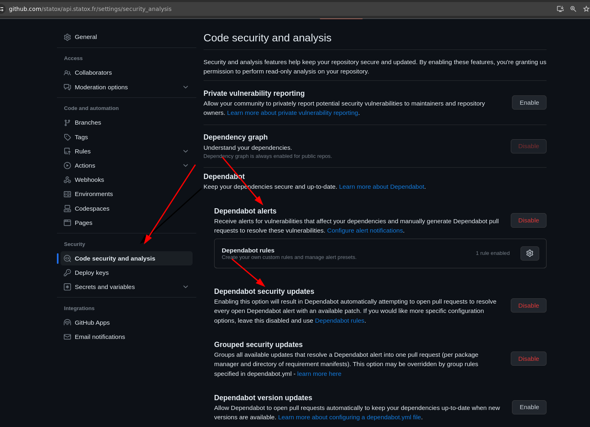
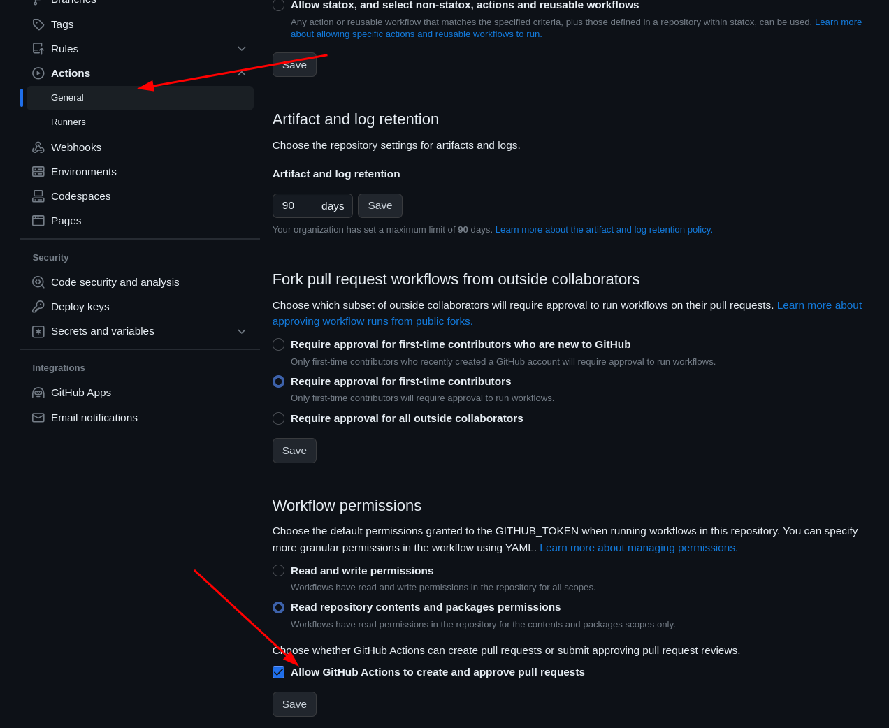
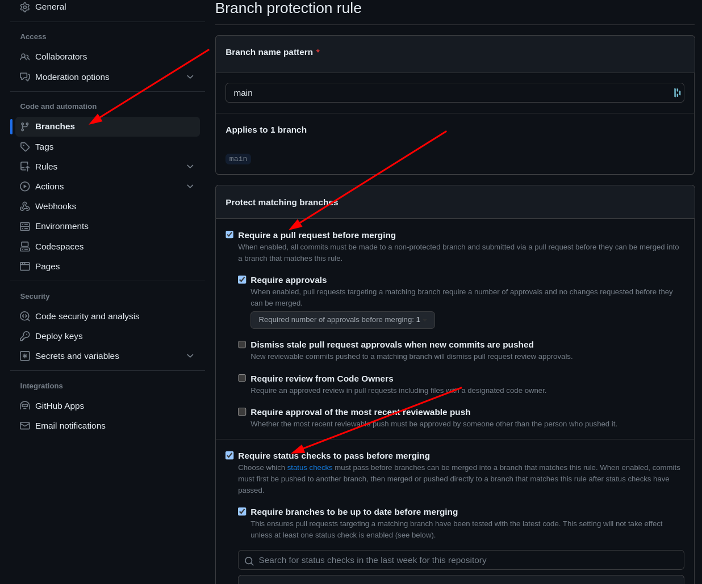
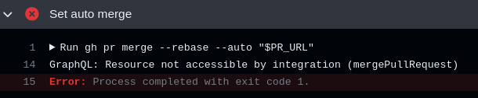
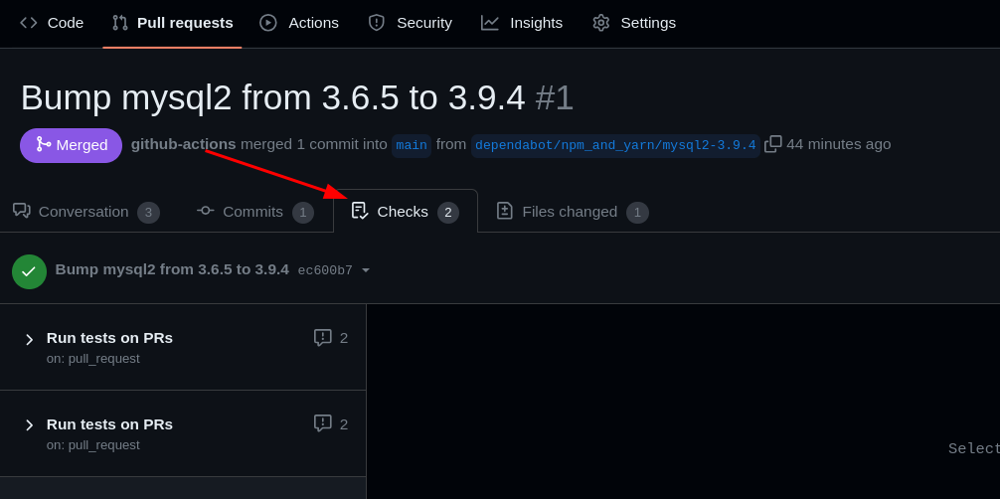
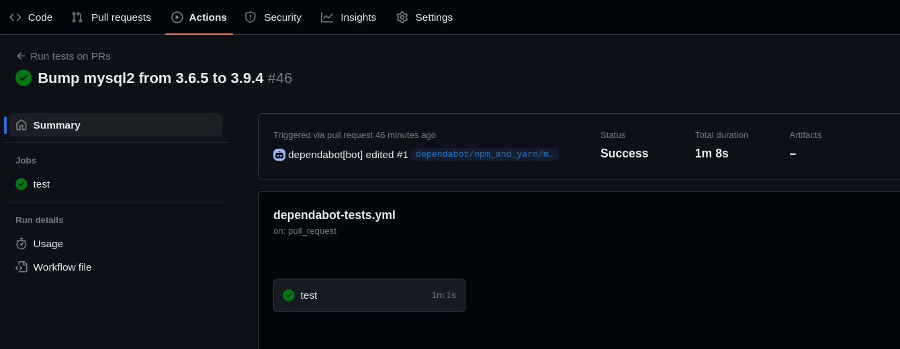
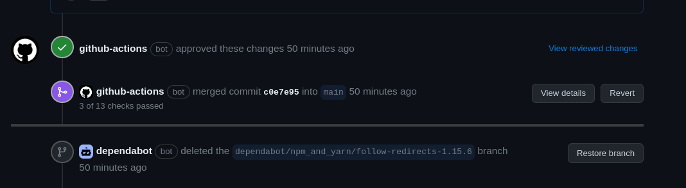

- 940 words -
I have Dependabot set on many of my repos but I often get too lazy to check the PRs and merge them. On my api repo this is an issue because I really want to keep dependencies up to date. Here is what I did to have Dependabot's PRs merged automatically as they are created.
The file lives there on Github
At no point there is a need to generate a github access token by yourself. Dependabot will use its own
For my api repo I use mocha to run the tests. I have 3 commands to be able to run the tests
npm run env # This triggers a podman-compose command starting the containers
./src/tools/init-db.sh # Create the test database in the container
npm run tests:all # Call mocha and run the testsAllow Dependabot to regularly create PRs with dependencies update.
In the Github repo settings: Security > Code security and analysis > Dependabot

For better configuration a file github/dependabot.yml can be created in the repo, see the doc for more details.
Allow GitHub Actions to create and approve pull requests. This is needed because the workflow we will trigger will be responsible for approving the PR automatically.
In the Github repo settings: Code and automation > Actions > General > Workflow permissions

In the Github repo settings: Code and automation > Branches > Add rule
The rule needs to apply to the main branch (i.e. the one we'll be merging to).
We need two checks enforced by the rule:
Require a pull request before merging and Require approvals: The approval will be given by github-action bot throught the workflowRequire status checks to pass before merging: The checks will be the success of the workflow itself and we'll make the workflow fail if the tests for the repo are not validated.
In the repo create a file for the workflow like .github/workflows/dependabot-auto-merge.yml
We will trigger the workflow on PRs.
TODO Find a way to trigger only for dependabot PRs, for now all MR will be automatically merged if they pass the tests.
types: Using edited is useful to debug the workflow while setting it up: once the MR is open, you can edit the workflow, push, comment @dependabot rebase on the PR and the workflow will be re-runname: Test and AutoMerge PRs
on:
pull_request:
types: [opened, synchronize, edited]
branches: [main]This changes the permissions of the github token that dependabot gets when creating the PR, we need two additional permissions.
permissions:
# This is needed to approve the PR
pull-requests: write
# This is needed to merge the PR https://github.com/cli/cli/issues/6695#issuecomment-1348430969
contents: writeWithout these permissions the calls the the gh cli in the next steps fail with errors similar to this:

One way to have the whole workflow triggered only for dependabot's PR is to add a condition for the job:
jobs:
test-and-auto-merge:
if: github.actor == 'dependabot[bot]'
runs-on: ubuntu-latest
steps:
# [...]This could be improved to better factorize the code and have the tests running on all MR and the auto merge running only on dependabot PRs but since I'm the only one working on this repo and I don't use PRs for other reasons I will not bother with that.
This is dependent on all repos though the important part is to run some tests. Here we need several setup steps:
python throught a marketplace Github action to be able to install podman-compose with pippodman throught a marketplace Github action.node to run build the project and run the tests.If these steps fail the following one will fail too, so the PRs tests will fail and the code will not be merged.
jobs:
test-and-auto-merge:
runs-on: ubuntu-latest
steps:
- name: Install python 3
uses: actions/setup-python@v5
with:
python-version: '3.x'
- name: Install podman
uses: gacts/install-podman@v1
- name: Install podman-compose
run: pip3 install podman-compose
- name: Install node.js
uses: actions/setup-node@v4
with:
node-version: 'latest'
- name: Checkout code
uses: actions/checkout@v2
with:
ref: ${{ github.head_ref }}
- name: Install dependencies
run: npm ci
- name: Start podman environment
run: npm run env
- name: Init db
run: ./src/tools/init-db.sh
- name: Run tests
run: npm run tests:allThree important steps:
fetch-metadata action to get the $PR_URL variable referring to the current PR and used in the next steps.github-action bot approve the PRgithub-action bot set the auto merge setting for the PR, which will trigger the merge of the PR because all the checks will succeed.jobs:
test-and-auto-merge:
runs-on: ubuntu-latest
steps:
# [...]
# Setup and test steps
# [...]
- name: Dependabot metadata
id: metadata
uses: dependabot/fetch-metadata@v2
with:
github-token: "${{secrets.GITHUB_TOKEN}}"
- name: Approve the PR
run: gh pr review --approve "$PR_URL"
env:
PR_URL: ${{github.event.pull_request.html_url}}
GH_TOKEN: ${{secrets.GITHUB_TOKEN}}
- name: Auto-merge the PR
run: gh pr merge --rebase --auto "$PR_URL"
env:
PR_URL: ${{github.event.pull_request.html_url}}
GH_TOKEN: ${{secrets.GITHUB_TOKEN}}Once all of that is configured the Dependabot PRs should be automatically handled.



When all of that is succesful I get emails from Github both for when the bot approves the PR and for when it merges it.
No other posts in the category [github]